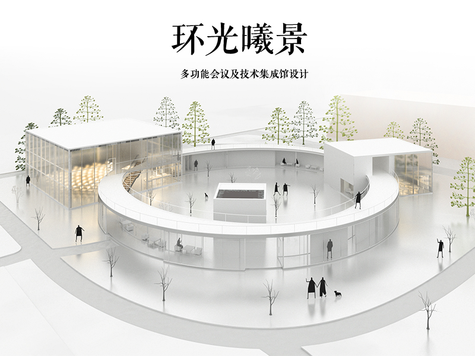

Multifunctional center Skin
A facade-shading strategy for the museum’s west-facing exhibition hall: reduce solar exposure and cooling burden while retaining suitable daylight, entrance recognition, and buildability.
01 Project Snapshot

Project: Velux Multifunctional Conference and Technology Integration Center Design Studio: Architecture Design-3
Context: This proposal for the VELUX multifunctional center originates from VELUX’s philosophy of “bringing nature into everyday life.” It seeks to introduce the natural environment into the building through a composition of dispersed primary volumes connected by circular auxiliary volumes, creating an architectural whole in which interior light and the surrounding natural landscape are highly integrated.
02 Design Decision
What decision was made? Select a facade and solar-shading system for the Multi-Function Hall that controls solar exposure, provides usable daylight, reinforces entrance identity, and remains buildable. Building volume, orientation, programme, structural grid, and total skin area are fixed to ensure a like-for-like comparison.
What alternatives existed?
Who was the audience or critic? The museum client and hall operator, exhibition/event curator, visitors approaching the public entrance, environmental consultant, facade fabricator, and studio tutor.
Why did the decision matter? The Multi-Function Hall is a public-facing and adaptable part of the conference center. Its facade directly affects late-day solar exposure and cooling burden, daylight and glare conditions for changing events, entrance recognition, the character of the overall composition, and the number, complexity, and maintenance burden of facade components.
03 Evidence Used Then
| Input | Type / source | What it supports | Strength |
|---|---|---|---|
| Precedent image | visual precedent | Form | Low-medium |
| Code requirement | standard | Compliance | High |
| Inspiration | Inspiration | Entrance identification | medium |
04 Weak Link
The evidence looked strongest when: the design looks holistic.
The evidence was actually weak because: an assumption by designer cannot reflect annual solar exposure, window heat gain, glare, or the operational state of adjustable modules.
The decision relied on assumption or preference when: the designer assumed that the design would perform well without considering the actual operating conditions and maintenance requirements.
05 Missing Variable, Range, or Threshold
| Variable to test | Reasonable scenario range | Decision threshold |
|---|---|---|
| Annual target-zone radiation | A: 20 / 35 / 50% opening ratio; B: 300 / 600 / 900 mm fin projection. Test during identical annual operating hours. | Lower than the unshaded-glazing baseline; select the lowest value that still passes daylight and view criteria. |
| Visual field accessibility | Low / medium / high screening density; check seated and standing eye levels, the courtyard view, and the entrance approach. | No continuous visual barrier at the public approach; retain a clear outward view from the principal occupied zone. |
| Effective daylighting | Annual UDI 100–2,000 lux plus a 300-lux task-zone check for conference use; test daylit and blackout event modes separately. | Provide useful daylight in normal daytime use while retaining full blackout capability for projection and exhibitions. |
| Cooling load | Same glazing, internal gains, setpoint, and annual schedule for the unshaded baseline, A, and B. | Lower annual cooling demand than the baseline after the daylight and glare requirements are met. |
| Glare risk | Annual direct-sun hours and ASE 1000,250h; assess seating, presentation, and display zones. | ASE ≤ 10% of the assessed floor area, with no persistent direct sun on presentation surfaces during occupied hours. |
| Public-interface legibility | Low / medium / high facade density; test entrance opening, contrast, and night-time lighting in approach views. | Entrance and public function are recognisable from the main approach; peer/tutor review score ≥ 4/5. |
| Construction difficulty | Count panel/fin units, non-repeating types, and connection families for each option. | Use repeatable modules: ≤ 3 component types and ≤ 2 connection families, unless a measured performance benefit justifies more. |
| Operation & maintenance | Compare fixed panel and fin systems by cleaning access, replacement access, drainage, and inspection needs. | All exterior faces can be reached through one planned cleaning/access strategy; no moving parts are required. |
Most conclusion-sensitive uncertainty: glazing solar performance, local climate data, the annual event/occupancy schedule, and the blackout or interior-blind strategy.
06 Workflow I Wish I Had
| Workflow | Input | What varies | Output / decision use |
|---|---|---|---|
| Grasshopper | Fixed volume, grid, skin area | A/B module parameters | Comparable geometry, open ratio, module count, node types. |
| Ladybug | Climate file, target grid, occupied hours | Facade prototypes | Useful annual daylight and glare risk. |
| Honeybee | Skin, gains, schedules, setpoint | Selected shortlisted skins | Solar-gain proxy first; annual cooling demand after assumptions are stable. |
07 One-Sentence Takeaway
If I rebuilt this decision now, I would test A and B with matched skin area and structure, vary panel porosity and fin geometry, and evaluate annual occupied-hour solar exposure, daylight and glare, cooling load, public legibility, constructability, and maintenance before selecting the facade.